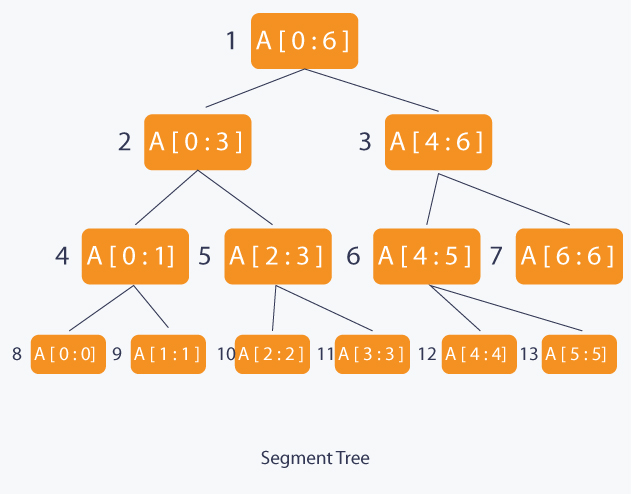

Segment trees are versatile data structures that can effectively handle real-time data processing challenges on Facebook. By facilitating efficient range queries, supporting dynamic updates, optimizing data aggregation, and ensuring scalability, segment trees play a crucial role in enhancing user experience, content management, and operational efficiency across Facebook’s dynamic platform. Their application enables Facebook to deliver personalized, timely, and engaging content to its global user base while maintaining robust performance and scalability in real-time data processing scenarios.
